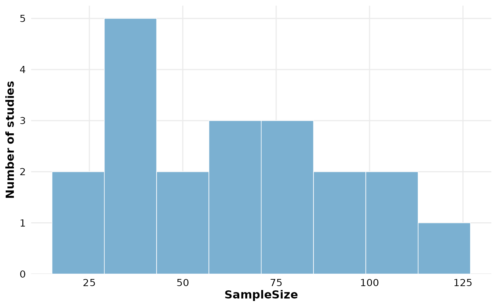
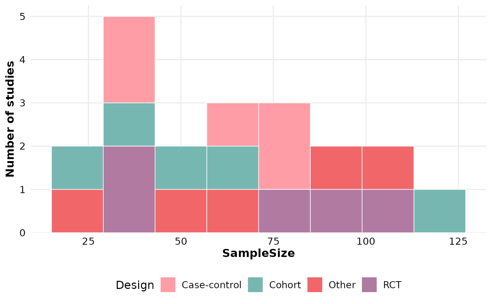

Bins the values of a numeric column and plots the frequency of each bin.
Optionally stacks bars by a second categorical column. Returns a
ggplot2::ggplot object that can be customized with +.
Usage
reviewHistogram(
data,
col,
fill_by = NULL,
bins = 30,
binwidth = NULL,
fill = "#7BB0D1",
colors = PALETTE,
sep = "\r\n",
base_size = 12,
na.rm = TRUE,
na_label = "Not reported"
)Arguments
- data
A data frame containing at least the column named by
col.- col
Numeric column to bin (quoted or unquoted).
- fill_by
Optional categorical column to stack the bars by (quoted or unquoted). If
NULL(default), bars are drawn in a single color.- bins
Integer. Number of bins. Passed to
ggplot2::geom_histogram(). Ignored whenbinwidthis set. Defaults to30.- binwidth
Numeric. Optional bin width. Overrides
binswhen set. Defaults toNULL.- fill
Character. Bar fill color when
fill_byisNULL. Defaults to"#7BB0D1".- colors
Character vector. Fill colors cycled across categories when
fill_byis set. Defaults to PALETTE.- sep
Character. Separator for multi-value cells in
fill_by. Defaults to"\r\n".- base_size
Numeric. Base font size in points; controls proportional scaling of all text and elements. Defaults to
12.- na.rm
Logical. Drop rows with missing values in
col(and, when set, infill_by)? Defaults toTRUE.- na_label
Character. Label for missing values in
fill_bywhenna.rm = FALSE. Defaults to"Not reported".
Value
A ggplot2::ggplot object.
Examples
df <- data.frame(
StudyID = paste0("S", 1:20),
SampleSize = c(30, 45, 60, 22, 88, 120, 35, 51, 74, 66,
40, 95, 110, 28, 72, 58, 41, 33, 80, 105),
Design = rep(c("RCT", "Cohort", "Case-control", "Other"), 5)
)
reviewHistogram(df, SampleSize, bins = 8)

reviewHistogram(df, SampleSize, fill_by = Design, bins = 8)
